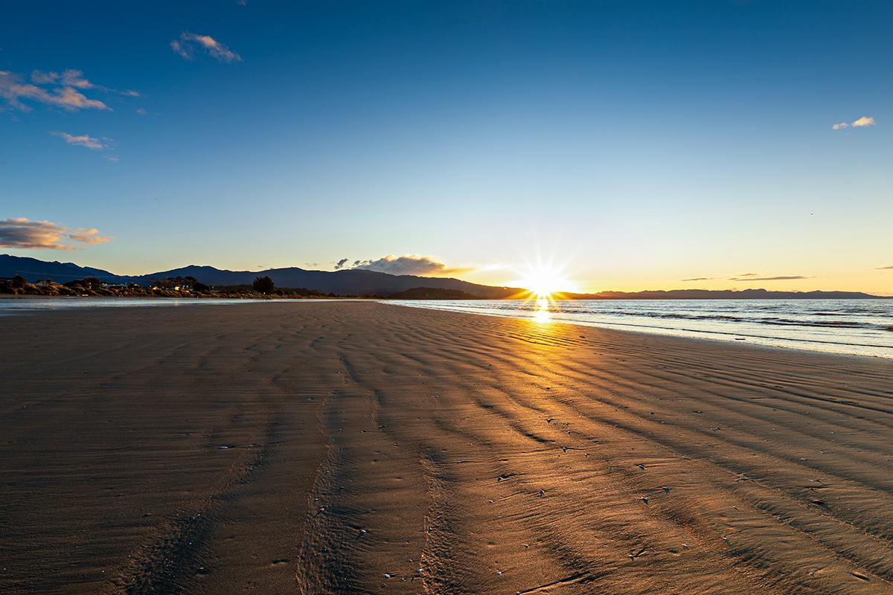

Pōhara Beach
Best for convenience, space, and an easy all-round beach day.
Swim feel
Gentle, broad, easy at high tide, relaxed at low tide.
Best for
Families, nearby accommodation, paddling without a big mission.
What stands out
Plenty of space, easy access, and a proper beach-day rhythm.
Good call when
You want the least planning and still want a very good swim.